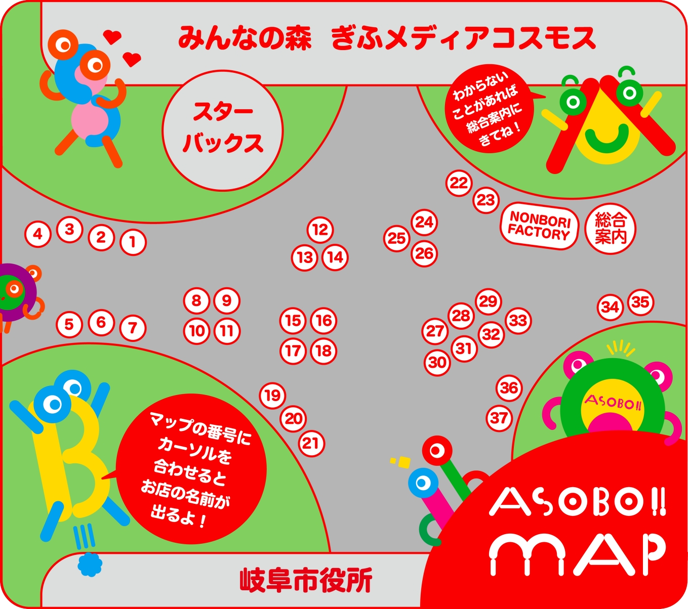

遊んで
食べて、
つくって。
家族でまるごと
楽しむ日！
食べて、
つくって。
家族でまるごと
楽しむ日！
- 日時
- 2026年10月4日（日）
10:00〜16:00 - 会場
- みんなの森 ぎふメディアコスモス
みんなの広場カオカオ／
せせらぎの並木テニテオ - 入場料
- 無料
- 雨天時
- 1週間前の降水確率70%以上で中止
（SNSでお知らせします）
1
子どもも大人も、どっちも主役。
"付き添い"で終わらない一日。大人がときめくお店と、子どもが夢中になるあそび場が同じ場所に並びます。
2
37店舗が大集合。
フードトラック、ワークショップ、こだわりの雑貨。歩くだけでも楽しい規模感です。
3
入場無料・手ぶらでOK。
入場料はかかりません。木陰の並木道でひと休みしながら、のんびり過ごせます。
ZONING MAP
会場マップ
番号にカーソル／タップでお店がわかります

SELECT A SHOP
気になる番号をえらんでね
マップの番号にカーソルを合わせる（スマホはタップ）とお店の名前が出ます。マップはピンチ／ドラッグで拡大・移動できます。
※ 会場レイアウトは変更になる場合があります。最終版は開催直前に更新します。
SHOPS & CONTENTS
出店者・コンテンツ
出店者は順次公開していきます。
最新情報は公式Instagramをチェック！
ACCESS
アクセス
会場
みんなの森 ぎふメディアコスモス 敷地内
みんなの広場カオカオ・せせらぎの並木テニテオ
岐阜市司町40番地5
バスでお越しの方
JR岐阜駅／名鉄岐阜駅からバスをご利用ください。「メディアコスモス・岐阜市役所前」下車すぐです。
お車でお越しの方
付近に市営駐車場がございますが、台数に限りがあります。会場に来場者専用の駐車場はありません。
※ 当日は混雑が予想されます。公共交通機関でのご来場にご協力ください。
最新情報はこちら
公式Instagram
FAQ
A. 入場無料です。どなたでもお越しいただけます。
A. Yahoo!天気にて開催1週間前の降水確率が70%以上の場合は中止となります。中止の場合はSNSでお知らせします。
A. 付近に市営駐車場はございますが、公共交通機関でのご来場を推奨しております。
A. はい、大丈夫です。会場は屋外の広場と並木道で、段差の少ないルートでまわれます。
A. 出店者によって異なります。キャッシュレス非対応のお店もありますので、現金もあわせてお持ちいただくと安心です。
A. 会場の規定に準じます。詳細は決まり次第、公式Instagramでお知らせします。
主催